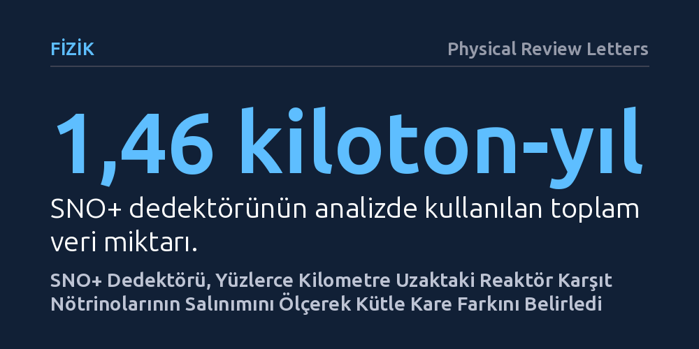

FIZIK · Physical Review Letters · 2026-09-08
SNO+ işbirliği, Mayıs 2022 ile Temmuz 2025 arasında toplanan verilerle yüzlerce kilometre uzaktaki nükleer reaktörlerden yayılan karşıt nötrinoların salınımını inceledi. Yapılan tayf analiziyle nötrino salınımı doğrulanarak iki nötrino kütle durumu arasındaki kare fark 7,91 değeriyle hassas biçimde ölçüldü.
Nötrinoların yolculukları sırasında kimlik değiştirdiğini bağımsız bir yer altı dedektörüyle doğrulayarak parçacık fiziğinin standart model ötesindeki temel kütle parametrelerini netleştiriyor.

Evrende ışıktan sonra en bol bulunan parçacıklar nötrinolardır. Güneş'in kalbindeki nükleer füzyondan nükleer santrallerdeki fisyon tepkimelerine kadar pek çok süreçte trilyonlarcası üretilir. Ancak maddenin içinden neredeyse hiçbir etkileşime girmeden geçip gittikleri için onları saptamak son derece zordur. Parçacık fiziğinin Standart Modeli uzun süre bu parçacıkların kütlesiz olduğunu varsaymıştı; fakat son çeyrek asırdaki deneyler nötrinoların uzayda ilerlerken bir türden diğerine dönüştüğünü, yani salınım yaptığını kanıtladı.
Bir parçacığın salınım yapabilmesi, kuantum fiziği ilkelerine göre farklı kütle durumlarına sahip olmasını gerektirir. Bu durum nötrinoların kesinlikle sıfırdan farklı bir kütleye sahip olduğunu gösterir. Ancak parçacık fizikçileri nötrinoların tekil kütlelerini doğrudan tartamaz; bunun yerine kütle durumları arasındaki kare farkı ölçebilirler. SNO+ çalışmasının yanıt aradığı temel soru da budur: Yüzlerce kilometre uzaktaki reaktörlerden çıkan karşıt nötrinoların enerji dağılımı incelenerek bu kütle kare farkı ne kadar yüksek bir hassasiyetle belirlenebilir?
Kanada'nın Ontario eyaletinde, etkin bir nikel madeninin iki kilometre derinliğinde bulunan SNOLAB, kozmik ışın gürültüsünden arındırılmış korunaklı bir laboratuvardır. Burada çalışan SNO+ deneyi, küresel bir hazneye doldurulmuş sıvı sintilatör maddesiyle çalışır. Reaktörlerden gelen bir elektron karşıt nötrinosu bu sintilatördeki bir protonla etkileştiğinde ters beta bozunumu gerçekleşir ve ortaya çıkan karakteristik ışık parlamaları binlerce hassas fotoçoğaltıcı tüple kaydedilir.
Araştırmacılar Mayıs 2022 ile Temmuz 2025 tarihleri arasında kesintisiz veri toplayarak 1,46 kiloton-yıllık bir maruziyet elde ettiler. Dedektör sahasındaki karşıt nötrino akısına en büyük katkıyı sırasıyla 240, 340 ve 350 kilometre uzaklıkta bulunan üç büyük Kanada nükleer santrali sağlamaktadır. Bu mesafeler, karşıt nötrinoların yolda salınım yaparak saptanabilir biçimde kimlik değiştirmesi için uygun bir taban çizgisi sunmaktadır.
Toplanan verilerin tayf analizi, reaktörlerden yayılan karşıt nötrinoların dedektöre ulaşana kadar belirgin bir enerjiye bağlı kayba uğradığını ortaya koydu. Salınım yapmayan kuramsal akı modeliyle karşılaştırıldığında belirli enerji aralıklarında gözlenen bu eksilme, karşıt nötrinoların yolda salınım yaparak dedektörün duyarlı olmadığı türlere dönüştüğünü doğrudan göstermektedir.
Elde edilen enerji tayfının matematiksel analizi sonucunda, iki hafif nötrino kütle durumu arasındaki kare fark parametresi 7,91 olarak hesaplandı. Bu ölçüm, daha önce Japonya'daki KamLAND deneyinin elde ettiği değerlerle uyum sergilerken, reaktör nötrinosu salınım parametrelerini bağımsız bir yer altı dedektörüyle ve yüksek istatistiksel güvenilirlikle doğrulamış oldu.
Bu ölçüm parçacık fiziğinde beklenmedik bir devrim yaratmasa da, temel evren sabitlerinin bağımsız dedektörlerle yüksek kesinlikte sınanması açısından önemli bir aşamadır. Farklı reaktör mesafeleri ve gelişmiş bir sıvı sintilatör ortamıyla elde edilen bu sonuç, nötrino salınım parametrelerindeki deneysel hata payını daraltmaktadır.
SNO+ deneyinin bu aşamadaki başarısı, dedektörün bir sonraki temel hedefi olan 'nötrinosuz çift beta bozunumu' araştırmaları için de kritik bir altyapı sağlamaktadır. Sıvı sintilatöre tellür elementi eklenerek nötrinonun kendi karşıt parçacığı olup olmadığı sınanacaktır. Reaktör karşıt nötrinolarıyla yapılan bu hassas ölçüm, evrendeki madde-antimadde dengesizliğinin kökenini araştıracak gelecek çalışmalar için sağlam bir referans noktası oluşturmaktadır.